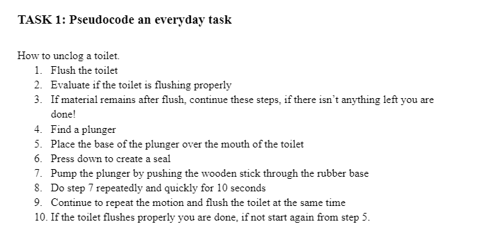
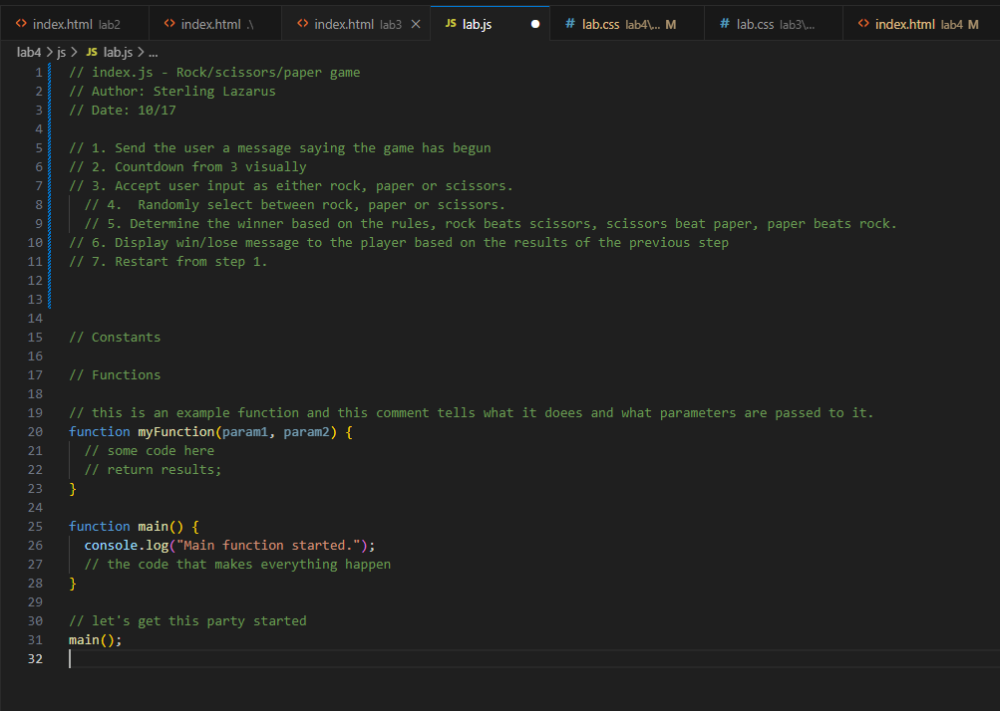
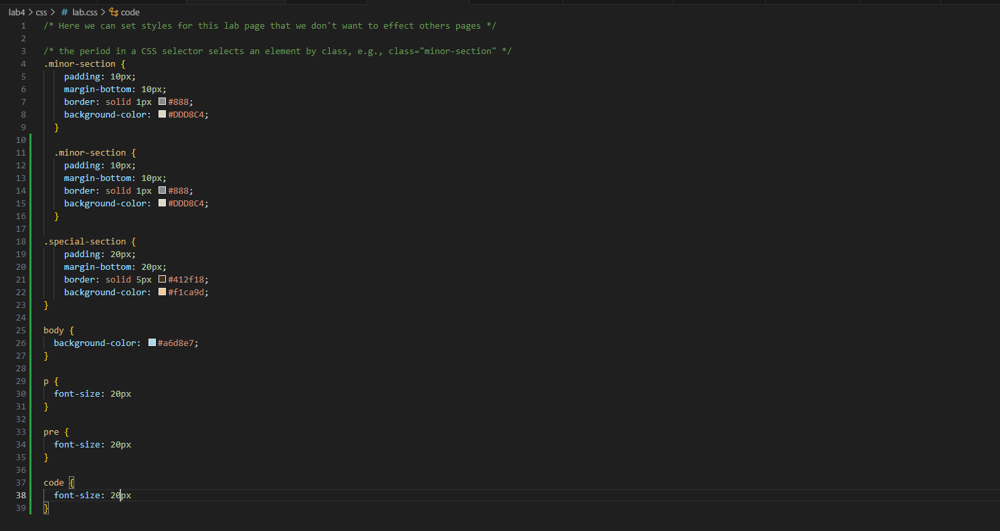

Lab 4 - Pseudocoding and Problem-solving
Challenge
The challenge for this lab was to pseudocode a game! It was also to get started with Java.
Problems
I couldn't figure out why my CSS wasn't working for a while. Turns out you need to always make sure to save a document after you update it or it won't work properly.
Results
Here is my js code for my game of rock, paper, scissors!
// 1. Send the user a message saying the game has begun
// 2. Countdown from 3 visually
// 3. Accept user input as either rock, paper or scissors.
// 4. Randomly select between rock, paper or scissors.
// 5. Determine the winner based on the rules, rock beats scissors, scissors beat paper, paper beats rock.
// 6. Display win/lose message to the player based on the results of the previous step
// 7. Restart from step 1.
Here is my steps to do an everyday task (unclog a toilet)
1. Flush the toilet 2. Evaluate if the toilet is flushing properly 3. If material remains after flush, continue these steps, if there isn’t anything left you are done! 4. Find a plunger 5. Place the base of the plunger over the mouth of the toilet 6. Press down to create a seal 7. Pump the plunger by pushing the wooden stick through the rubber base 8. Do step 7 repeatedly and quickly for 10 seconds 9. Continue to repeat the motion and flush the toilet at the same time 10. If the toilet flushes properly you are done, if not start again from step 5.
Photos from this project!
Here is my javascript!
Here is my written task list!
Here is my CSS!